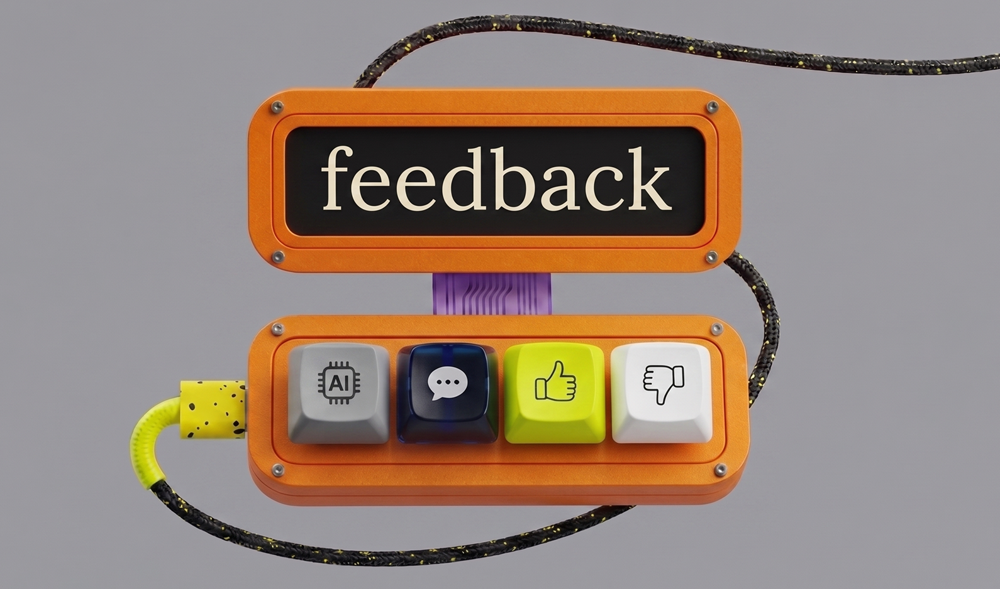
Project Overview
To give enterprises greater control over their AI applications, my team and I designed Thread Tracing, a governance module that lets AI administrators observe organization-wide interaction data from a holistic perspective. Grounded in Google's PAIR framework, the system transforms scattered user feedback into structured, visual intelligence. Administrators can proactively identify model deviations and convert feedback into actionable instructions, closing an autonomous loop of monitor, feedback, and optimize.
My Role
PM, sole designer, and user researcher. I owned the feedback taxonomy design, the dashboard information architecture, the feedback-to-instruction pipeline, and the PAIR framework application.
Company & Timeframe
Wren AI · 2026
During the design process at Wren AI, my team and I discovered that when AI systems move from the lab into enterprise environments serving thousands of users, what administrators fear most isn't AI "not knowing the answer", it's AI "giving the wrong answer and nobody knows why."
The current state is a "black box":
Our mission
As Senior Product Designer, my team and I set out to design a Feedback Loop that lets AI stop merely executing tasks and start learning to "evolve" from its mistakes.
We observed user behavior over three months, segmenting by engagement level and query mode. Three failure patterns kept surfacing:
Why Feedback Loops Matter
Referencing Google's PAIR framework, feedback is more than opinion collection, it's the core engine driving system evolution:
Balancing Dual-Track Collection
In our design, we adopted a parallel implicit-and-explicit strategy to ensure both breadth and depth of data:
Based on the above, my team and I designed Thread Tracing as a four-stage closed loop, each stage directly targeting a gap we identified.
Feedback should blend naturally into the workflow. Previously the thumbs-up / thumbs-down icons sat almost invisibly in the action row, so few users ever pressed them. We made the ask explicit, extended the Yes / No click into finer-grained tags (SQL generation failure, retrieval error, instruction non-compliance, summary error, SQL-Pairs deviation), and auto-captured the AI's reasoning trace at the moment of failure, preserving the "crime scene" that had previously vanished.
The old design buried feedback in the generic action row, a tiny thumbs-up / thumbs-down wedged between copy, share, and regenerate. Almost nobody pressed them. We pulled the question into the answer itself with an inline Was this result helpful? prompt, pinned directly below every response. The Yes / No click stays low-commitment on purpose; the structured intake only unfolds when a user actually has something to report. Lifting the ask from chrome to content was the single biggest behavioral lever in this chapter, response rate climbed +45% once the prompt was impossible to miss.
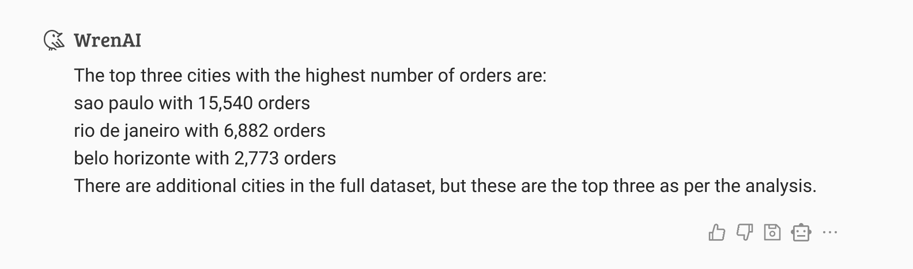
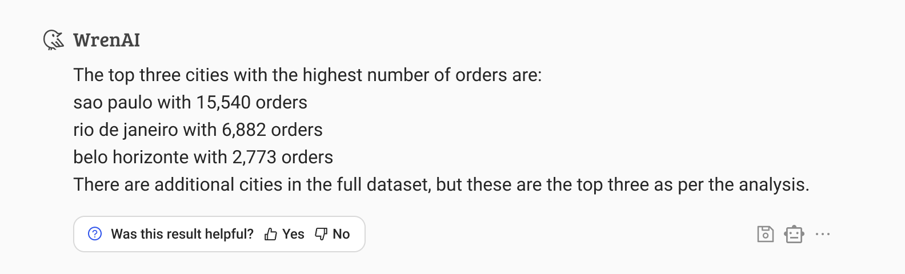
An early open-text version of this form taught us that unstructured feedback fragments into paraphrases of the same problem, "the SQL is wrong", "it used the wrong table", "the query broke" all meant one thing but read as three. We mapped the five real AI failure modes, SQL generation failed, Failed to retrieve data, Failed to follow instructions, Incorrect AI summary, SQL-Pairs deviation, onto a fixed chip set. Users tap; the system aggregates. Signal survives the translation, and the admin dashboard can finally count apples against apples.
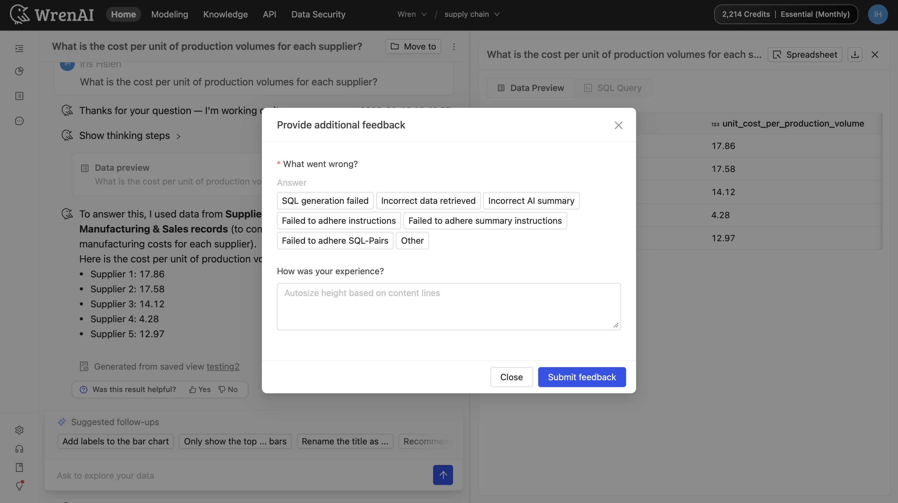
A long form hurts completion rate; a short form loses specificity exactly where it matters most. The compromise: the modal stays lean by default, but when a user picks Failed to follow instructions, the one tag where "which rule" changes everything, a second dropdown reveals every project-level instruction currently configured. Other exists as a last resort, deliberately positioned as the least actionable option. The admin either gets a named rule to fix, or a clear signal that the instruction taxonomy is missing coverage.
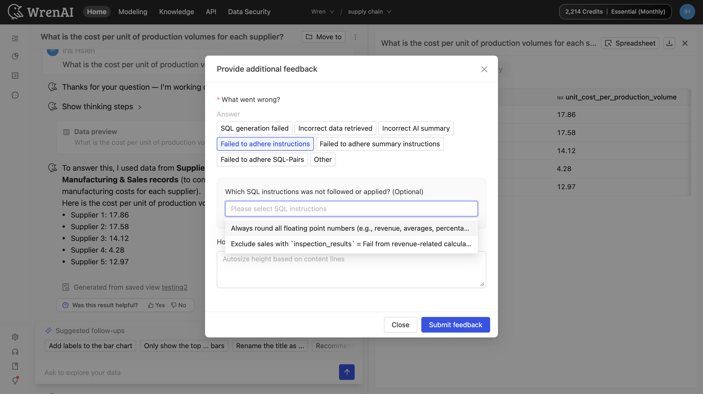
Answers and charts fail for different reasons, so they can't share one tag list, but they have to share one mental model, or users stop trusting the form after the second surface. Every feedback modal keeps the same three-part shape: rate → tag → optional description. Only the tag vocabulary swaps. A user who gave feedback on a broken SQL answer already knows what to do the first time a chart renders with the wrong axis, even though the specific options are different.
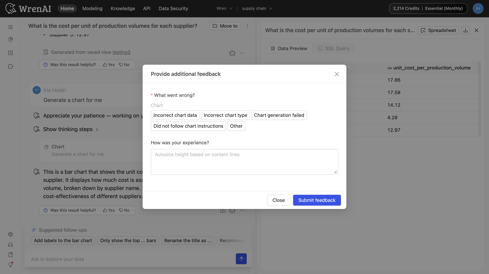
The feedback modal was the producer; this dashboard is the consumer. Project owners open Settings → Project → Thread tracing and land on a single screen that has to answer two questions fast, is the AI getting better or worse this week, and what's the dominant failure mode right now. Everything else is a filter.
Admins don't want to open on a list of failures, they want to know if the needle is moving. The hero of the dashboard is a success-metrics chart (positive vs negative feedback, by day), with the failure-breakdown bar chart sitting directly underneath. The order matters: you glance at the trend line to decide whether last week's fix actually helped, then drop to the bars to see which category is spiking. Putting the breakdown first would have inverted the question into "what's failing?" before the admin had even decided whether anything needed fixing.
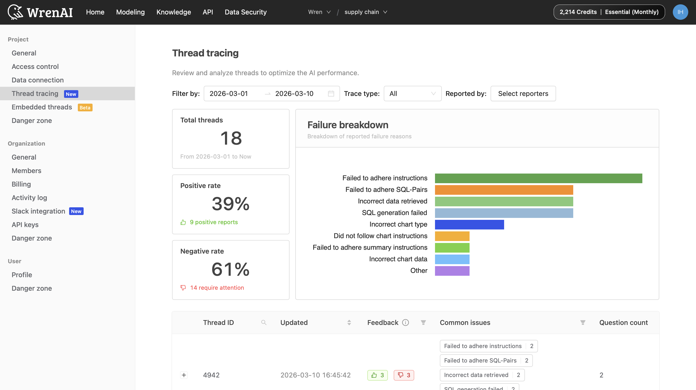
Early prototypes filtered only by date range and trace type (Answer vs Chart). That wasn't enough once we talked to cross-team admins, marketing's failure profile looks nothing like finance's. We promoted Reported-By (specific members and user groups) into a first-class control rather than hiding it behind an advanced options menu, so the same bar chart can answer "which team's queries is the AI struggling with?" in two clicks. On the table below, a thumbs-up / thumbs-down toggle lets an admin zoom straight to explicit negative signal when they're hunting for the next correction.
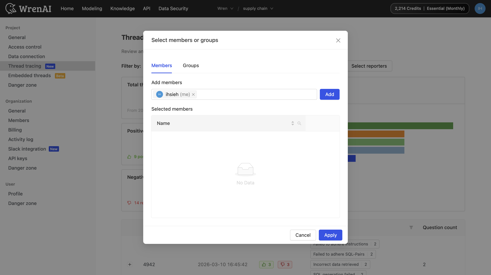
The thread table is the bridge between "a number went up" and "here's the actual broken query." Each row collapses to Thread ID, timestamp, trace type, and sentiment. Expand it and the AI's suggested failure reasons appear inline, so admins can decide whether a full dive is worth it before opening the trace drawer. Action → View is where the reasoning trace, metadata, and SQL live, deep information, but gated behind the admin's intent rather than served up front.
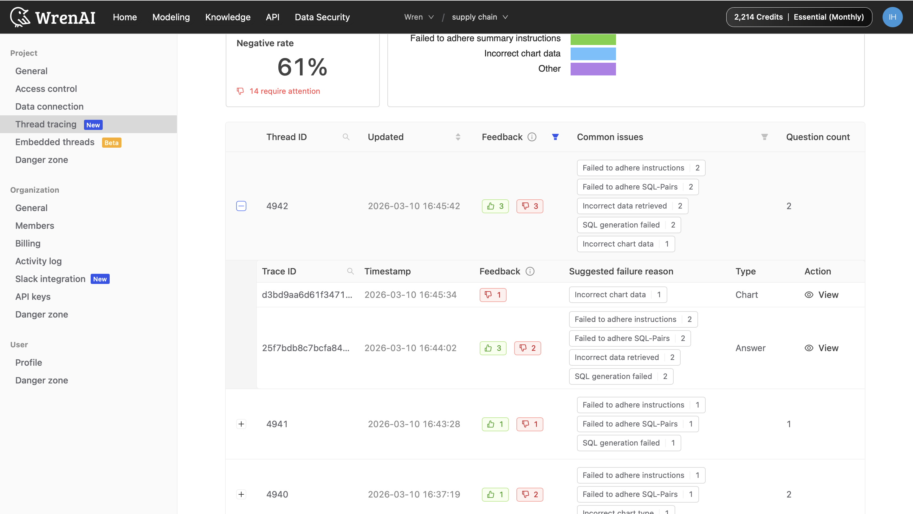
The drawer opens at the moment of decision, you've scanned the expanded row, the suggested failure reason looks worth investigating, and you click View. What you need now isn't a new page: it's a focused brief. The drawer surfaces creator identity and the reporter who flagged it (separating who ran the thread from who noticed the error), the AI's run status (distinguishing what the machine recorded from what the user perceived as broken), the issue tags the user chose, and the thread name that gives the failure natural-language context before the SQL appears. Every field earns its place, remove the reporter and you lose the cross-team signal; remove the thread name and the SQL reads without context. The drawer is designed to be read in thirty seconds and decided on.
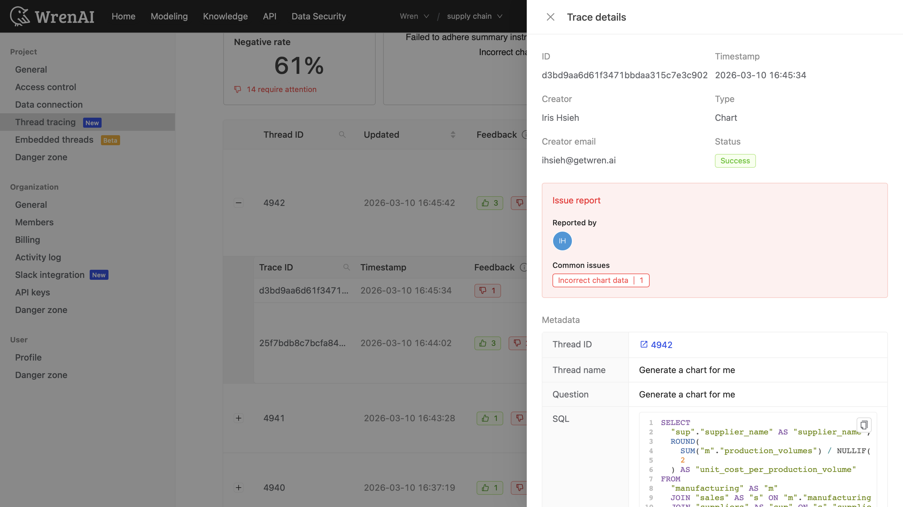
The feedback modal captures the signal; the trace drawer names the failure. This chapter is where that named failure becomes a repeatable test. When an admin converts a diagnosed thread into an Eval question, they're not writing a test case from scratch, they're turning a real user complaint into a permanent benchmark that runs against every future correction.
A test case without a ground truth is just a question. The Eval suite requires admins to pair every natural-language question with a verified SQL, either hand-authored or AI-generated and approved. This pair is the unit of measurement. Once locked, it becomes the objective standard the AI is scored against, not a human's memory of "it used to work," but a reproducible, version-controlled definition of correct. The Preview Data button closes the loop at definition time: you know the SQL is valid before it ever becomes a benchmark.
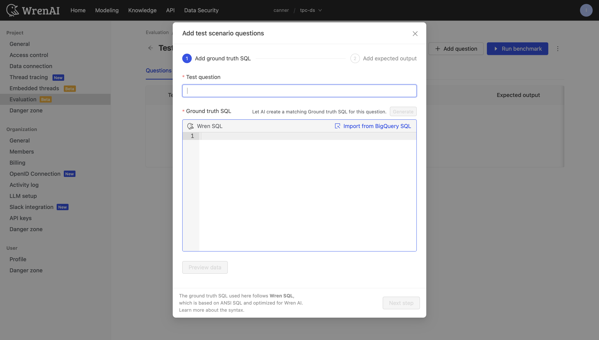
Step 1 establishes the SQL anchor. Step 2 establishes what the answer should actually say, key findings, data sources, conclusions. Separating these steps forces admins to think about correctness at two levels: "Did the AI write the right query?" and "Did the AI surface the right insight from it?" A query can return the right data and still produce a misleading summary. The two-step model makes that distinction explicit, so regressions in either layer are caught independently.
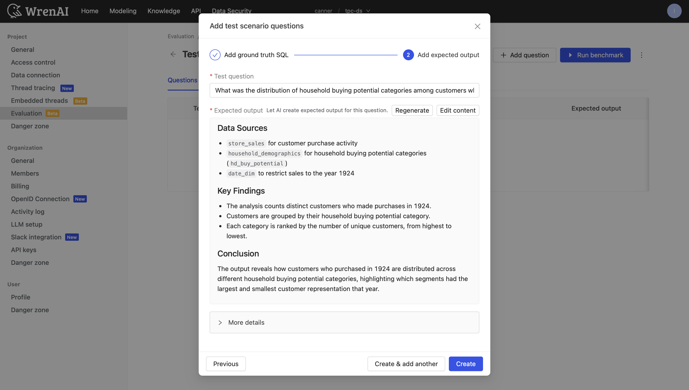
The assessment view shows Pass / Fail alongside a score reason ("Column count mismatch: generated is missing 1 column"), a side-by-side SQL diff, a data preview comparison, and the AI's reasoning timeline. Each element answers a different diagnostic question: the score reason says where the divergence happened, the SQL diff shows which clause caused it, the data preview shows whether it mattered in practice, and the reasoning timeline reveals whether the AI misread the question or misbuilt the query. Admins leave the view knowing not just that a correction failed, but where to aim the next one.
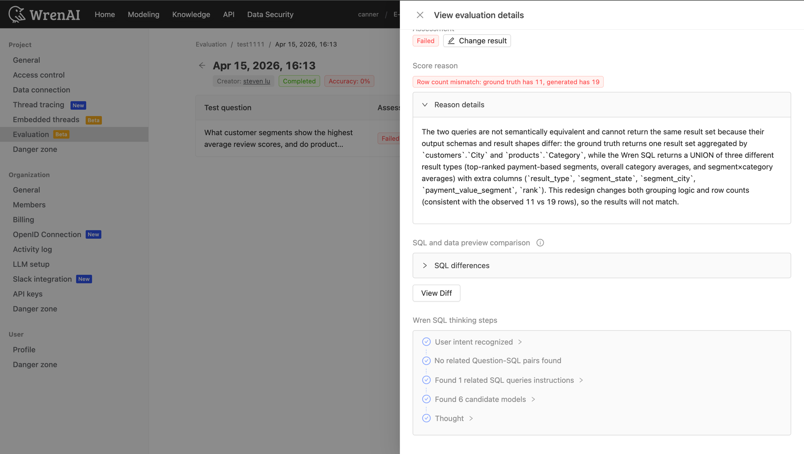
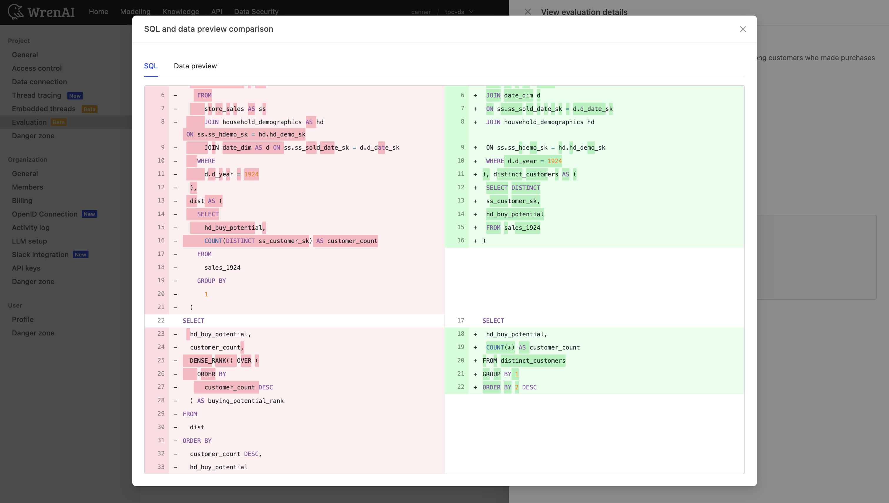
The Eval suite names what failed. The AI Advisor takes it from there, running a diagnostic pass on the benchmark failures, staging specific knowledge-base changes, and verifying the result before anything ships. Correction becomes targeted instead of instinctive.
Admins don't describe the problem to the advisor, they select the failing questions directly from the benchmark result. The advisor takes those as input and runs its own diagnostic pass across the knowledge base. The selection step matters: it scopes the diagnosis to confirmed failures, not hypotheticals, which keeps staged suggestions tightly coupled to observed regressions rather than guesswork.
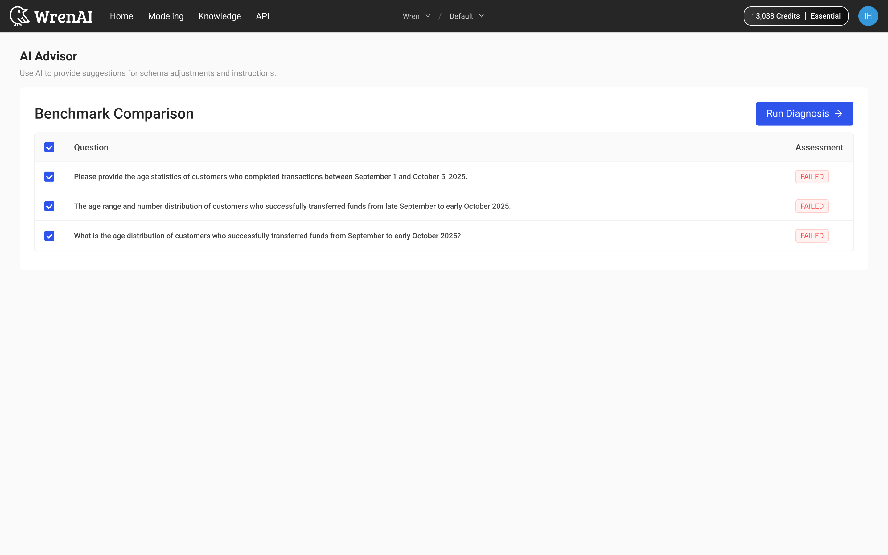
The advisor surfaces schema adjustments and instruction edits as staged proposals, one change at a time, with edit and deselect controls on each. Admins can review the logic, modify the wording, or remove an item entirely before anything is applied. The separation between diagnosis and apply is intentional: it keeps human judgment in the loop on changes that touch the AI's core knowledge model, where a poorly scoped instruction can create new regressions while fixing old ones.
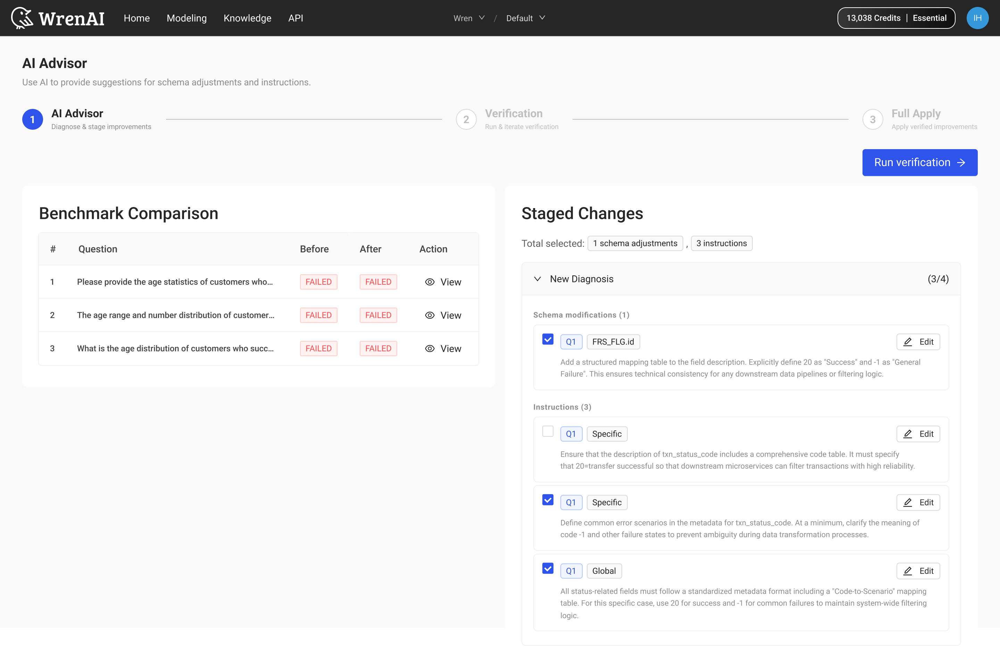
Before staged changes are applied, the advisor runs a verification pass against the same benchmark questions. A Before / After column shows the per-question outcome, which failures resolved, which remained, and whether anything that previously passed has regressed. Admins commit only when the verification run agrees the changes are safe. This gate means every staged fix has been tested, not just reviewed.
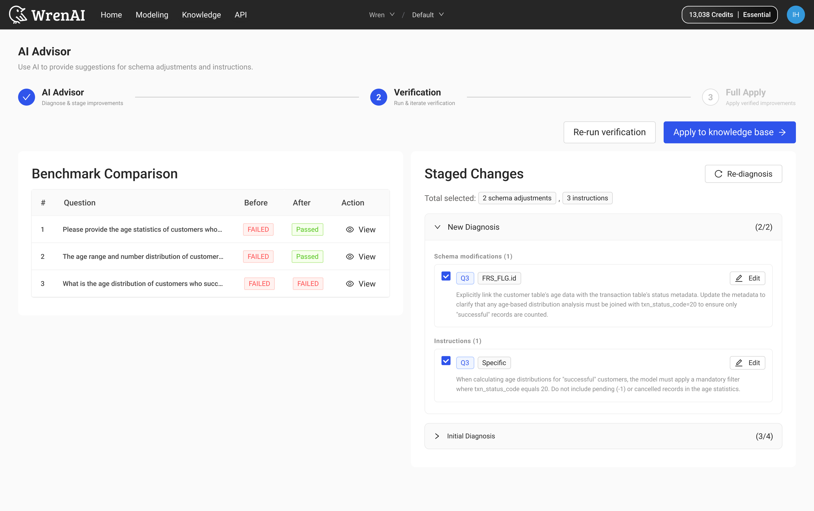
The advisor's verification pass only re-tests the questions it set out to fix. But a schema edit written to patch one failure can quietly break a question that was already green. Before anything ships to the AI system, the full benchmark runs one more time, every question, not just the failing ones, and only a clean sweep unlocks the final apply.
Apply to AI system is intentionally the end of a two-gate process. The first gate is the advisor's Before/After on the failing subset; the second gate is a full-bank re-run that surfaces any new regressions introduced by the staged edits. Only when both rows read clean does the button activate. What ships isn't a suggestion an admin approved, it's a correction that the benchmark itself has signed off on.
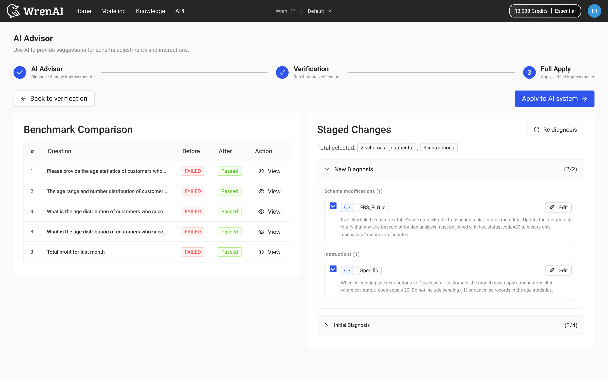
With apply complete, the benchmark run becomes the permanent record for the cycle. Accuracy delta, an Improvement: Completed stamp, every schema field the advisor touched, every instruction it added, all stitched to one timestamp. The loop doesn't just close; it leaves a signed receipt the next cycle reads from.
The benchmark result page carries three things at the top, the accuracy score, the Improvement: Completed label, and an expandable Advisor result that inventories every schema adjustment, every Specific or Global instruction, and a per-question verdict. An admin returning three weeks later can reconstruct why the AI behaves the way it does without asking the original author. For the next correction cycle, this record is also the baseline: the next full re-run compares against this version of truth, not against memory.
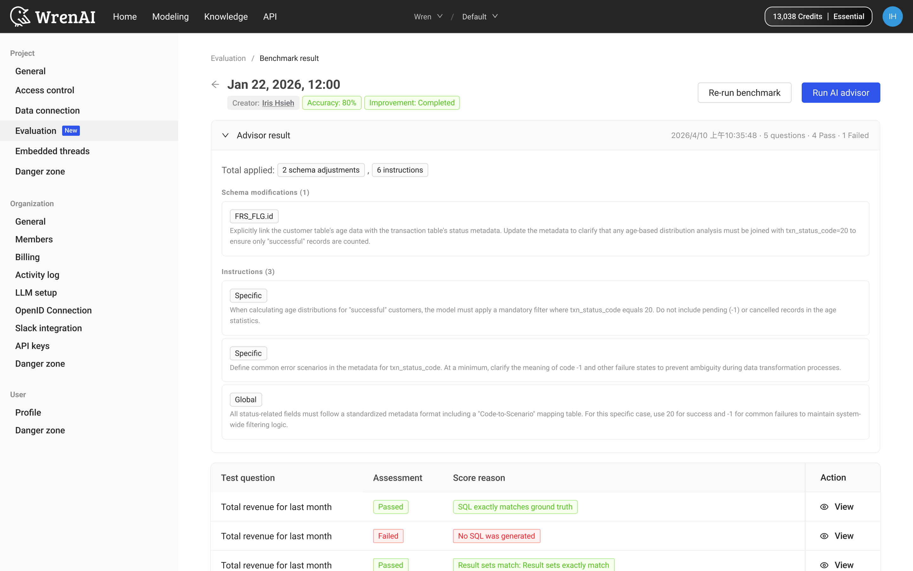
The first AI Advisor I shipped assumed correction could be a single transaction. On a failed benchmark question, the admin opened a right-side drawer, read the score reason, and saw two things directly: a proposed schema adjustment with an Apply adjustment button, and a recommended instruction with an Add to instruction button. One click per row committed the change. That was the entire user flow, no verification pass, no full re-run, no trace of whether the fix actually held across the rest of the bank. The advisor spoke, the admin clicked, the drawer closed.
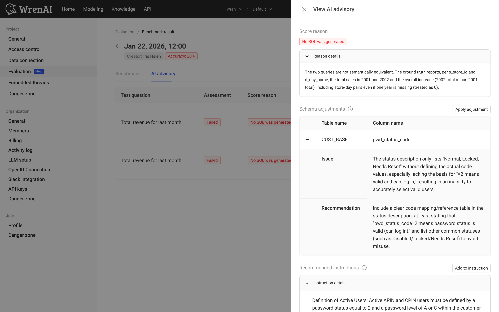
BEFORE · One-shot AI advisory drawer, Apply and Add, then the flow ended.
Testing with real eval sets proved that mental model wrong. A schema note that fixed one failure often introduced a new one elsewhere, and the admin had no way to see it until a user complained again. Correction isn't a transaction, it's a cycle. That realization reshaped every screen that came after: we stopped designing a linear diagnose → fix → done flow, and started designing for repeated rounds of test, adjust, and re-verify, with the benchmark sitting between each cycle as the arbiter of whether a fix actually shipped.
The second version replaced the single click with a loop. Every staged schema modification and every new instruction now passes through a Before / After verification run, the same failing questions, re-executed with the edits, shown side by side so admins can see exactly which failures resolved and whether any passing question regressed. Changes aren't overwritten; they accumulate. Each round adds to a growing stack of schema adjustments and instructions that the advisor has already confirmed safe, and Re-run verification lets the admin add another edit and test it against that stack before anything reaches the knowledge base. A correction is no longer final after one click, it's final after the benchmark stops surfacing regressions.
AFTER · A multi-round Before / After verification loop, every schema modification and instruction earns its place only after repeated re-runs.
This was the most critical, and most labor-intensive, part of engineering collaboration. When each correction round may trigger new side effects, the interface can no longer be a one-way conveyor belt. We had to design every step for "what if this needs to be done again": error classification needed to support re-tagging, the test bank needed incremental expansion rather than full replacement, and correction results needed immediate comparison with previous rounds rather than simply overwriting them.
This mindset shift also changed how we presented AI reasoning paths to administrators. In the initial linear model, we only needed to show "here's the error, here's the fix." But in an iterative model, administrators need to understand why the same issue recurs, which previous corrections may have introduced new problems, and which areas still haven't been covered by the test bank. Information architecture evolved from a simple diagnostic report into a multi-round correction history with contextual comparison.
The most valuable lesson: once we accepted that correction is a cycle rather than a destination, design decisions became much clearer. Every feature needed to answer one question, "Does this help the next iteration go more smoothly?", rather than "Does this solve the problem once and for all?"
Thread Tracing turned what had been scattered, headache-inducing user errors into a core data asset that drives the product's evolution.
A Systemic Shift in Collaboration Efficiency
Building the Test Set mechanism standardized the language my team uses for AI troubleshooting. It dissolved the gap between engineering and design over what the error actually was, shrinking a correction cycle that used to take days of back-and-forth down to minutes-long exercises of targeted diagnosis and fix.
Redefining the Designer's Role
This project reshaped how I see my role. In an AI product, a designer's job reaches beyond the surface of the interface, it becomes the work of building the governance logic. I wasn't just fixing a bug; I was building a framework that made the AI's black-box reasoning transparent and controllable.